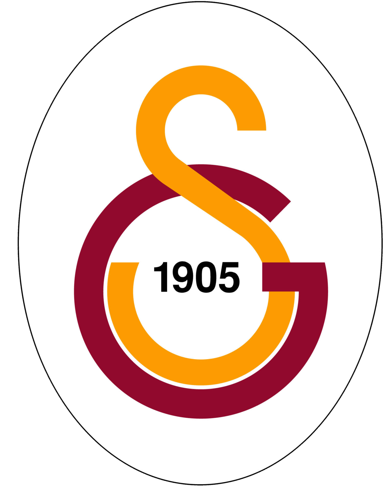
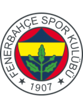

1.10
milyar €
Toplam değer
Kulüpler - Süper Lig 24/25
Sezon
| # | Kulüp | Kadro | Yaş | Lejyonerler | Piyasa değeri | Toplam değer |
|---|---|---|---|---|---|---|
| 1 |  | 30 | 27.2 | 16 | 8.88 mil. € | 266.25 mil. € |
Süper Lig
Lig seviyesi:
 1.Lig
1.Lig
1.Lig
Son şampiyon:
Galatasaray
Rekor şampiyon:
Galatasaray 25 kez
UEFA Ülke Puanı Sıralaması:
10. sıra 43.900 Puan
Öne çıkan söylentiler
Darwin Núñez
Yaş: 25 yaşında
Mevki: Santrafor
Piyasa değeri: 45.00 mil. €
>>>
